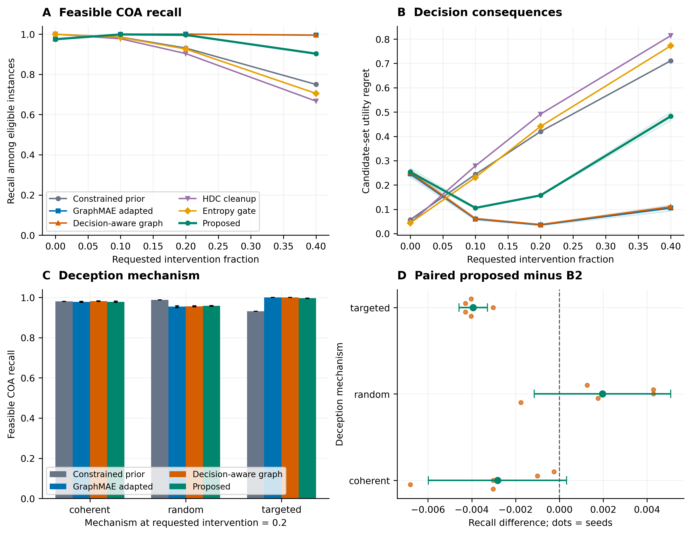
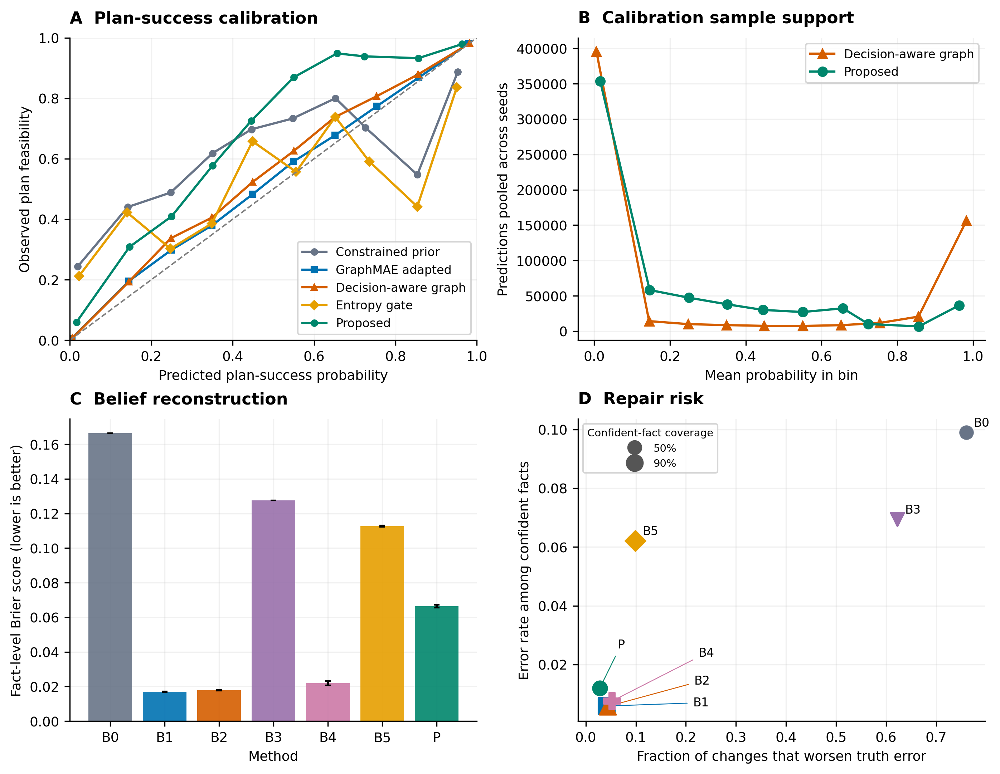
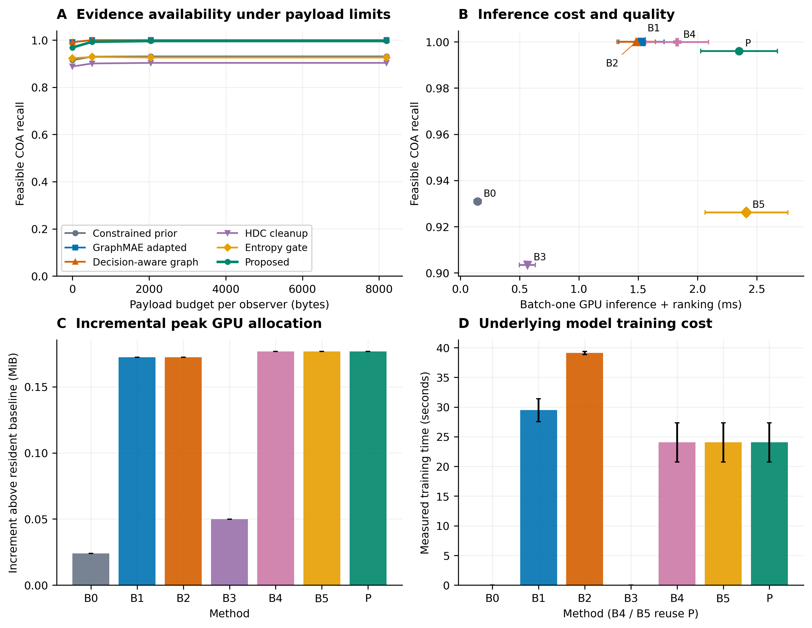
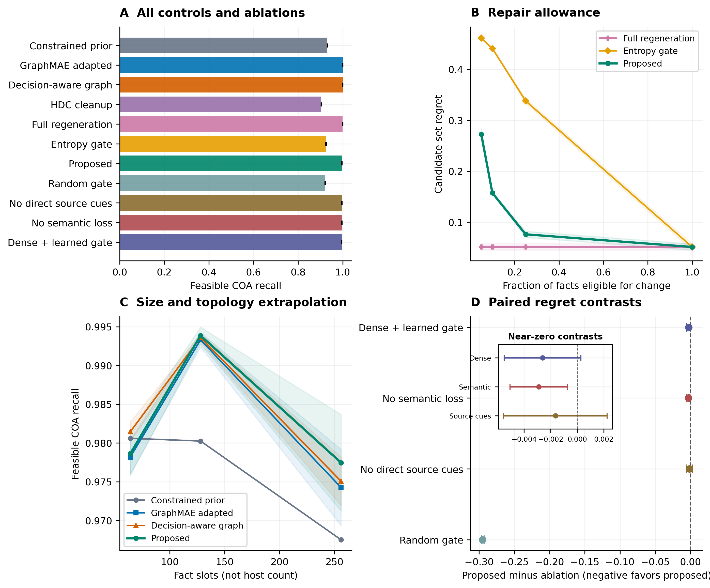

Selective regeneration under deceptive evidence
5 training seeds · NVIDIA RTX 5000 Ada Generation · 4 main empirical figures · 2 additional supplemental figures
A controlled GPU study of belief repair and candidate ranking. Reference condition: 64 facts, 20% requested targeted report interventions, a 2,048-byte budget per remote observer, and a 10% repair allowance. Measurements support this synthetic setting; they do not establish a complete operational planner.
Measured findings and limitations · Study manifest · Three-page supplement
Method key: B0: Constrained prior; B1: GraphMAE adapted; B2: Decision-aware graph; B3: HDC cleanup; B4: Full regeneration; B5: Entropy gate; P: Proposed.
Planning quality under deception

Requested intervention severity, deception mechanisms, and paired proposed-minus-B2 recall contrasts. Error bars and bands are 95% Student-t intervals over training seeds; small dots in panel D are individual seed contrasts.
Vector PDF · PNG · Provenance
Calibration and repair diagnostics

Plan-success calibration pools candidate predictions across seeds. Fact-level Brier scores and mean snapshot-level conditional repair/confidence errors use the reference condition. Empty conditional denominators contribute zero; marker area in panel D encodes confident-fact coverage, which is also tabulated in the results report.
Vector PDF · PNG · Provenance
GPU resources and available evidence

All methods share one sparse symbolic wirecodec: payload limits change evidence availability, so this is not an HDC compression comparison. CUDA timing covers warmed batch-one inference and candidate ranking. Memory is incremental peak allocation above resident models/data. B4 and B5 reuse P training.
Vector PDF · PNG · Provenance
Controls, repair allowances, and extrapolation

The full-repair, entropy, and random selectors reuse P weights. Dense + learned gate is independently trained. The source-cue ablation retains the shared age-weighted prior. Larger 128/256-fact tests also change the topology family; facts are not host counts.
Vector PDF · PNG · Provenance